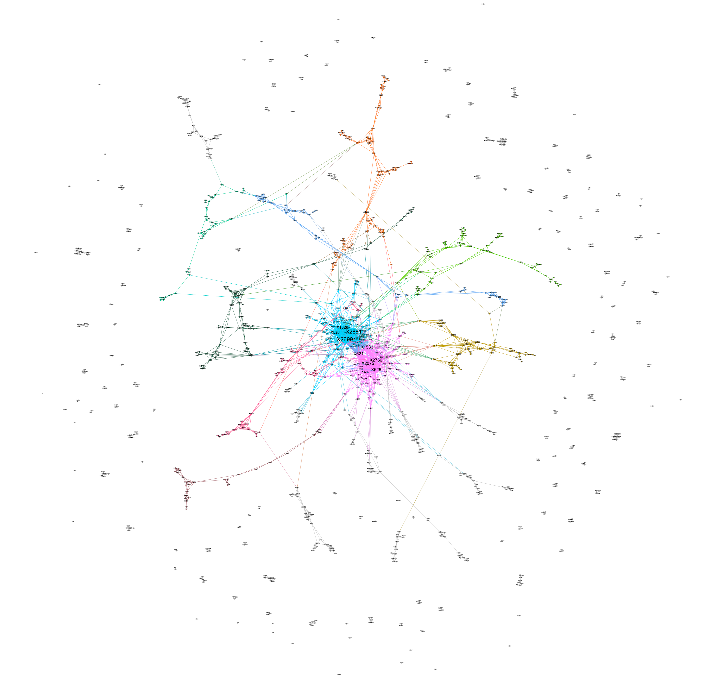
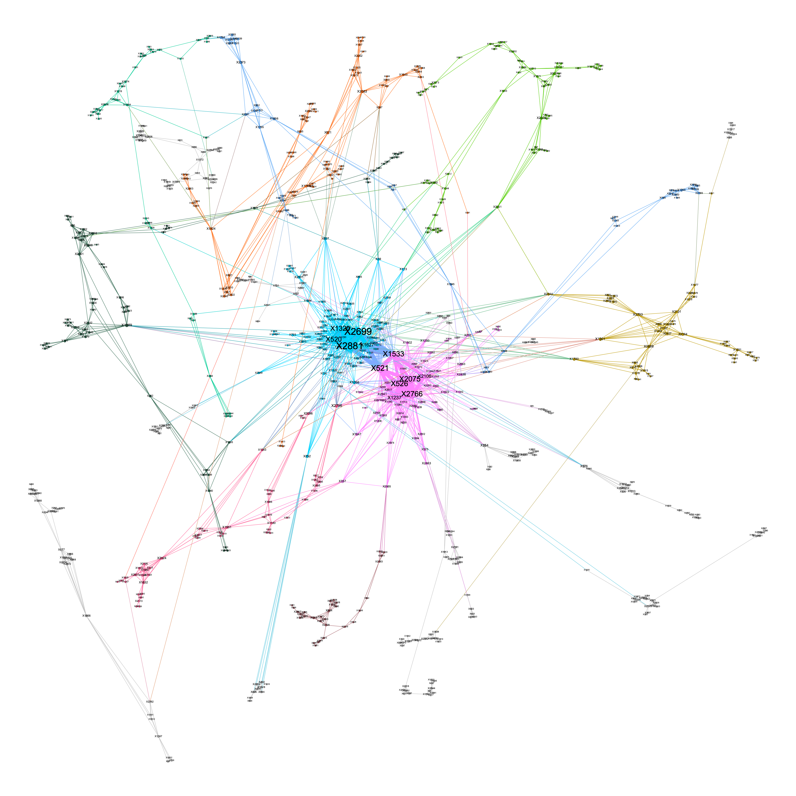

Chapter 4 Network Construction
4.1 Network Construction Process
Below are the steps for calculating the “gene score” of each location that quantifies the degree of association between a base position and the disease/trait of interest. A higher score means a stronger association.
For each position \(g\), we performed marginal regression and obtain a p-value, \(p_g\). Every position then is assigned a score \(\sigma(g) = -2log(p_g)\) (Vandin et al., 2012). Two positions share an edge if they occur together, and the edge weight is their co-occurrence number.
# record p values for each position
mutations_pVal = c()
disease_status_vector = c(rep(1,n/2),rep(0,n/2))
for (i in 1:length(position)){
outcome <- "disease_status_vector"
variable <- position[i]
f <- as.formula(paste(outcome,
paste(variable),
sep = " ~ "))
model <- lm(f, data = sub_data)
mutations_pVal = c(mutations_pVal,summary(model)$coefficient[,4][2])
}
# compute score for each mutated position
mutations_score <- -2*log(mutations_pVal)edges = melt(A) %>% rename(Source = Var1, Target = Var2, Weight = value)%>%mutate(Type = "Undirected") %>% select(Source, Target, Type, Weight) %>%
filter(Weight != 0)
nodes = as.data.frame(colnames(sub_data))%>%mutate(Lable= colnames(sub_data))
colnames(nodes) = c("Id","Lable")
A.dat = as.data.frame(A)4.2 Analysis
After revising our simulation methodology, we simulated using 3000 base positions and 500 samples to obtain the following graphs. 12 of the 15 previously identified SNP locations are chosen to be part of at least one genetic pathway: X520, X521, X526, X1237, X1320, X1533, X1627, X2075, X2106, X2699, X2766, and X2881. These 12 effective SNP locations form 4 causal pathways that lead to the disease:
X2699, X1320, X520, X2881
X2766, X1237, X2075, X521, X526
X526, X2766, X2106, X2075, X1533
X2699, X521, X2881, X1533, X1627
After a round of random mutations, we obtain 1187 mutated positions in total. This gives us an undirected weighted graph with 1187 nodes and 2838 edges, which produces an average degree of4.78. There is a single major component containing roughly 65% of its nodes. Expectedly, all causal pathways identified beforehand exist within this major connected component. Figure 4.1 shows the full graph, while Figure 4.2 shows its single major component. Using a resolution of 1, we obtained 25 modularity classes within the major connected component. The 12 selected positions are divided between two largest modules.
 \[\text{Figure} \; 4.1 :\; \text{Full Network of Mutated Gene Base Positions}\]
 \[\text{Figure} \; 4.2 :\; \text {Modularity Class Decomposition within the Major Connected Component, with Nodes Sized According to Closeness Centrality}\]
4.3 Centrality Measures Report
Table 4.1 reports the top 12 nodes ranked by their degrees, eigenvector centrality, closeness centrality and betweeness centrality. The 12 effective disease-related positions selected are exactly the top 12 nodes with the greatest degrees and eigenvector centrality. This might be a result of the high degree of inter-connectivity among these positions. By comparison, the \(8^{th}\), \(10^{th}\), and \(12^{th}\) nodes with the most closeness centrality are random variations, while 8 of the top 12 nodes with the greatest betweenness centrality are random variations.
dt$Degree = cell_spec(dt$Degree, color = ifelse(dt$Degree %in%pathwaySNP, "red", "blue"))
dt$`Eigenvector Centrality` = cell_spec(dt$`Eigenvector Centrality`,color= ifelse(dt$`Eigenvector Centrality` %in%pathwaySNP, "red", "blue"))
dt$`Closeness Centrality` = cell_spec(dt$`Closeness Centrality`, color = ifelse(dt$`Closeness Centrality` %in%pathwaySNP, "red", "blue"))
dt$`Betweeness Centrality` = cell_spec(dt$`Betweeness Centrality`, color = ifelse(dt$`Betweeness Centrality` %in%pathwaySNP, "red", "blue"))| Rank | Degree | Eigenvector Centrality | Closeness Centrality | Betweeness Centrality |
|---|---|---|---|---|
| 1 | X2699 | X2881 | X2881 | X2881 |
| 2 | X2881 | X2699 | X2699 | X2699 |
| 3 | X521 | X521 | X1533 | X1533 |
| 4 | X2075 | X1533 | X520 | X807 |
| 5 | X2766 | X2075 | X1320 | X2083 |
| 6 | X526 | X2766 | X521 | X2438 |
| 7 | X1533 | X526 | X2075 | X2251 |
| 8 | X520 | X520 | X2766 | X1301 |
| 9 | X1320 | X1320 | X526 | X1806 |
| 10 | X1237 | X1627 | X39 | X1739 |
| 11 | X1627 | X1237 | X1627 | X521 |
| 12 | X2106 | X2106 | X1889 | X571 |
| Rank | Degree | Eigenvector Centrality | Closeness Centrality | Betweeness Centrality |
|---|---|---|---|---|
| 1 | <span style=" color: red !important;" >X2699</span> | <span style=" color: red !important;" >X2881</span> | <span style=" color: red !important;" >X2881</span> | <span style=" color: red !important;" >X2881</span> |
| 2 | <span style=" color: red !important;" >X2881</span> | <span style=" color: red !important;" >X2699</span> | <span style=" color: red !important;" >X2699</span> | <span style=" color: red !important;" >X2699</span> |
| 3 | <span style=" color: red !important;" >X521</span> | <span style=" color: red !important;" >X521</span> | <span style=" color: red !important;" >X1533</span> | <span style=" color: red !important;" >X1533</span> |
| 4 | <span style=" color: red !important;" >X2075</span> | <span style=" color: red !important;" >X1533</span> | <span style=" color: red !important;" >X520</span> | <span style=" color: blue !important;" >X807</span> |
| 5 | <span style=" color: red !important;" >X2766</span> | <span style=" color: red !important;" >X2075</span> | <span style=" color: red !important;" >X1320</span> | <span style=" color: blue !important;" >X2083</span> |
| 6 | <span style=" color: red !important;" >X526</span> | <span style=" color: red !important;" >X2766</span> | <span style=" color: red !important;" >X521</span> | <span style=" color: blue !important;" >X2438</span> |
| 7 | <span style=" color: red !important;" >X1533</span> | <span style=" color: red !important;" >X526</span> | <span style=" color: red !important;" >X2075</span> | <span style=" color: blue !important;" >X2251</span> |
| 8 | <span style=" color: red !important;" >X520</span> | <span style=" color: red !important;" >X520</span> | <span style=" color: red !important;" >X2766</span> | <span style=" color: blue !important;" >X1301</span> |
| 9 | <span style=" color: red !important;" >X1320</span> | <span style=" color: red !important;" >X1320</span> | <span style=" color: red !important;" >X526</span> | <span style=" color: blue !important;" >X1806</span> |
| 10 | <span style=" color: red !important;" >X1237</span> | <span style=" color: red !important;" >X1627</span> | <span style=" color: blue !important;" >X39</span> | <span style=" color: blue !important;" >X1739</span> |
| 11 | <span style=" color: red !important;" >X1627</span> | <span style=" color: red !important;" >X1237</span> | <span style=" color: red !important;" >X1627</span> | <span style=" color: red !important;" >X521</span> |
| 12 | <span style=" color: red !important;" >X2106</span> | <span style=" color: red !important;" >X2106</span> | <span style=" color: blue !important;" >X1889</span> | <span style=" color: blue !important;" >X571</span> |